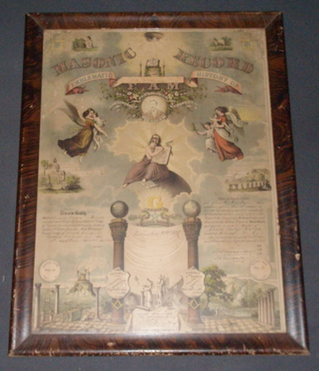
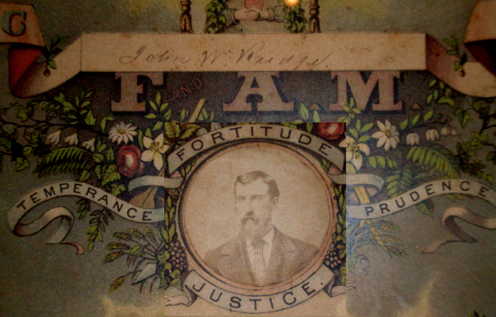
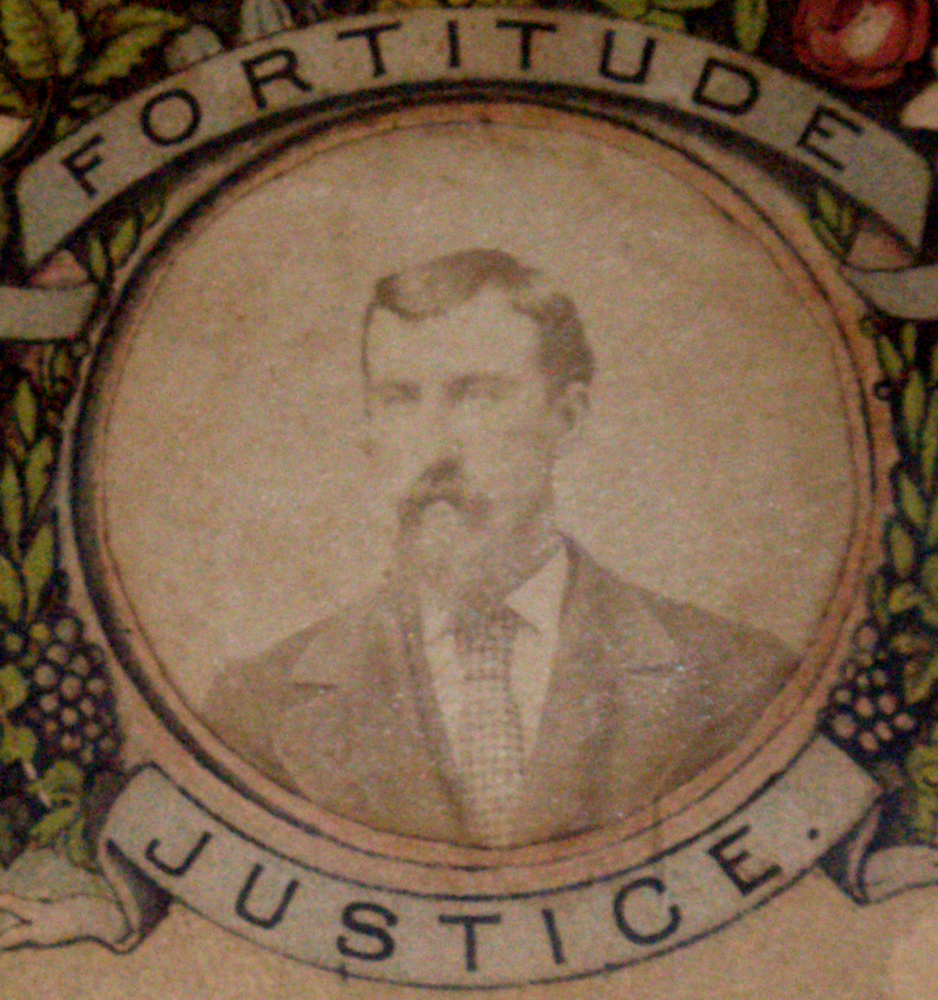

John William Rudge's Masonic Plaque

This is the entire plaque. It is 20 inches tall by 25 inches wide.

This is the center. I had a problem with my flash being reflected, so I had to photoshop a picture of his face that had no glare onto a background in which the glare did not obscure the signature.

And this is a close up of his face.
Last updated on 12 Oct 2009